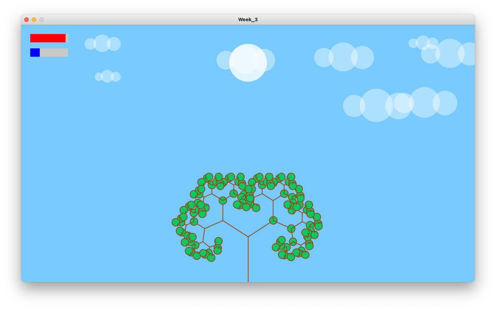
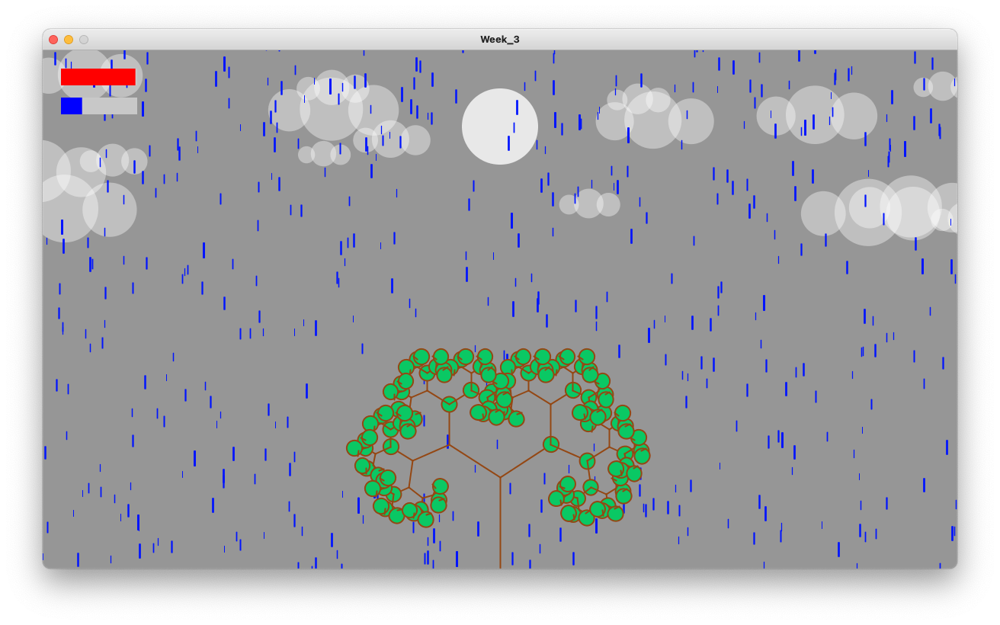
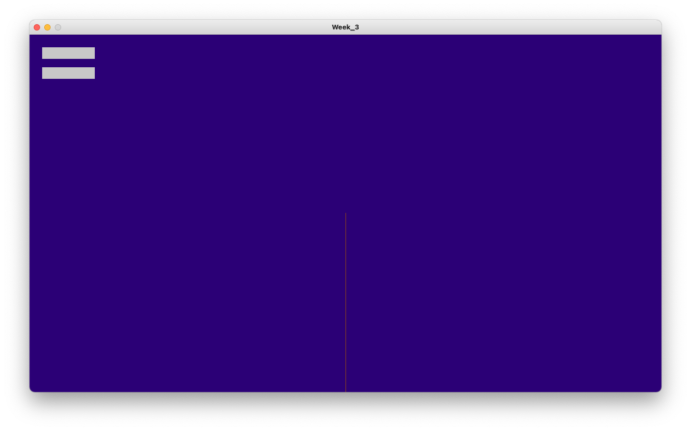

Project 1
May 18, 2021An Essential Ecosystem For Growing An Apple Tree 🍎
I chose this ecosystem because it's very natural and seems very obvious to prototype. I wanted to be able to build a natural ecosystem that users can watch peacefully and let it grow. In order to have an apple tree grow in an environment, I thought of 3 essential objects that affect the tree: sun, sky, and cloud. These objects have certain functions so that apple tree will either grow or die and produce apples. As shown in a diagram below.

Translating Idea Into Code
In order to have an essential environment for a tree, it would also need environmental changes where it would rain on certain occasions and have it's own time so that sun can rise and set.
Challenges
Challenges encountered while developing the idea
Interactivity
I originally thought to have naturally growing environment for a tree to grow, but there was no interaction. There needed to be ways for users to be more engaged with the prototype.
Growing the tree
In the code, itw as difficult to find right timing for the enviornment to start raining and how to keep track of the environment so that the tree would grow depending on how much sunlight and water it receives.
Timer using frames
void updateTime() {
if (rate >= 1) {
rate = 0;
minutes += 1;
} else {
rate++;
}
if (minutes == 60) {
minutes = 0;
hours++;
}
if (hours == 24) {
hours = 0;
day++;
}
}
Since 30 frames are drawn in a second, I created own updateTime function to update the time every frame. Therefore, every second, the prototype's in-time would be 30 minutes.
Solutions
Dependencies on user input and the environment

User input to create clouds
Since it would be unrealistic for users to be able to change time, it was more natural for users to create clouds if the users want it to rain, so that the user can simply click on the screen and probability of raining will increase as numbers of clouds adds up on the screen.
Randomly generated clouds
While clouds are able to be generated from clicking the screen, it's also generated randomly every 1/30 of the seconds. It's not implemented yet, but the goal is that the user will have enough balance of precipitation so that the tree won't die.
Final product
The spaceship can move around, rotate and shoot missles. Once an asteroid collides with the ship, the game is over.
Next Steps
Death of a tree
Probability of raining
Right now, it will rain when there are 20 clouds shown on the screen. However, that means that the users can keep clicking on the screen whenever they want it to rain. It would be more interesting to have the chance of rain to increase as the number of clouds increase.
Death of a tree
Sun rises and sets, and it's only hidden when it rains. Right now, the user has to make the environment rain so that the tree will grow. However, users will be more engaged in making the rain happen with probabilities, and having them to realize that having too much of water will eventually kill the tree. If this is implemented, the users have to make decisions on when create clouds.